C:\Users\chira\AppData\Local\Temp\ipykernel_11780\2217802626.py:10: FutureWarning:
Passing `palette` without assigning `hue` is deprecated and will be removed in v0.14.0. Assign the `x` variable to `hue` and set `legend=False` for the same effect.
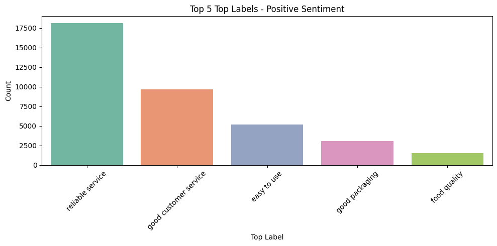
Reliable service” stands out as the most frequently praised feature. Customer service and ease of use follow as other key drivers of positive sentiment.
C:\Users\chira\AppData\Local\Temp\ipykernel_11780\3209300340.py:7: FutureWarning:
Passing `palette` without assigning `hue` is deprecated and will be removed in v0.14.0. Assign the `x` variable to `hue` and set `legend=False` for the same effect.
Unresponsive customer service” dominates negative feedback. Price-related concerns and delivery issues (missing items, wait times) are also significant.
C:\Users\chira\AppData\Local\Temp\ipykernel_11780\200243279.py:7: FutureWarning:
Passing `palette` without assigning `hue` is deprecated and will be removed in v0.14.0. Assign the `x` variable to `hue` and set `legend=False` for the same effect.
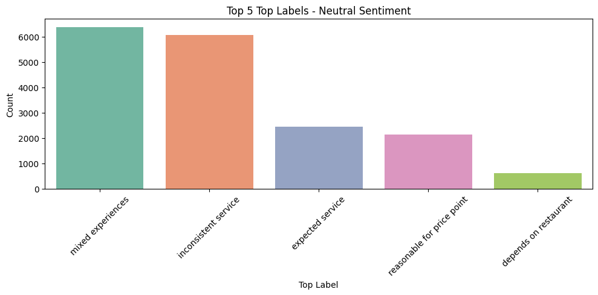
Feedback reflects variability, with “mixed experiences” and “inconsistent service” being most mentioned. Neutral sentiments often reflect tempered expectations or situational outcomes.
C:\Users\chira\AppData\Local\Temp\ipykernel_11780\3373619653.py:13: FutureWarning:
Passing `palette` without assigning `hue` is deprecated and will be removed in v0.14.0. Assign the `x` variable to `hue` and set `legend=False` for the same effect.
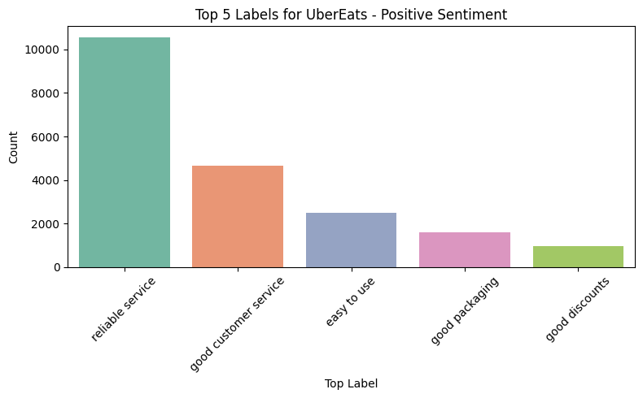
UberEats is positively recognized for reliable service and good customer support. “Good discounts” also appear, showing promotional offers impact user satisfaction.
C:\Users\chira\AppData\Local\Temp\ipykernel_11780\719617373.py:10: FutureWarning:
Passing `palette` without assigning `hue` is deprecated and will be removed in v0.14.0. Assign the `x` variable to `hue` and set `legend=False` for the same effect.
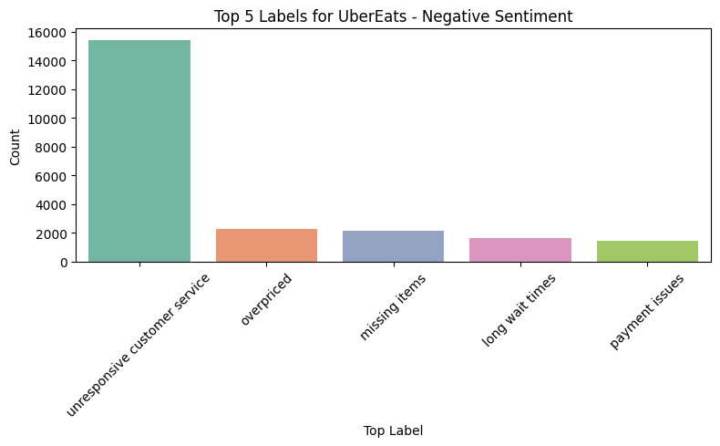
“Unresponsive customer service” is the top concern among UberEats users. Other recurring complaints include pricing and delivery fulfillment issues.
UberEats - Top 5 Labels for Neutral Sentiments
C:\Users\chira\AppData\Local\Temp\ipykernel_11780\3615030921.py:10: FutureWarning:
Passing `palette` without assigning `hue` is deprecated and will be removed in v0.14.0. Assign the `x` variable to `hue` and set `legend=False` for the same effect.
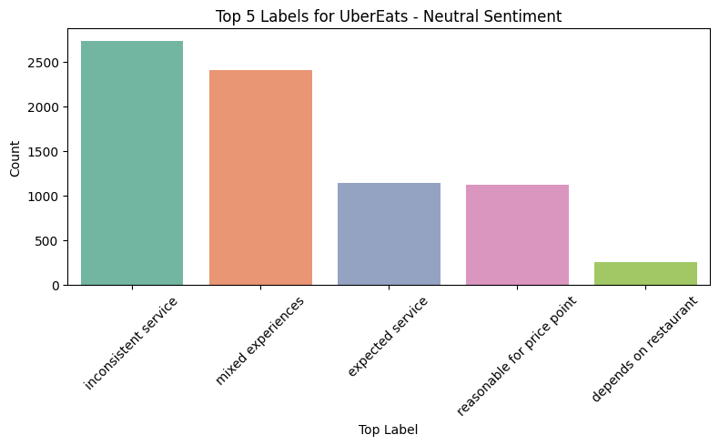
“Inconsistent service” and “mixed experiences” dominate the neutral feedback for UberEats. Sentiment here indicates fluctuating user experiences without strong positive or negative lean.
C:\Users\chira\AppData\Local\Temp\ipykernel_11780\233713667.py:5: FutureWarning:
Passing `palette` without assigning `hue` is deprecated and will be removed in v0.14.0. Assign the `x` variable to `hue` and set `legend=False` for the same effect.
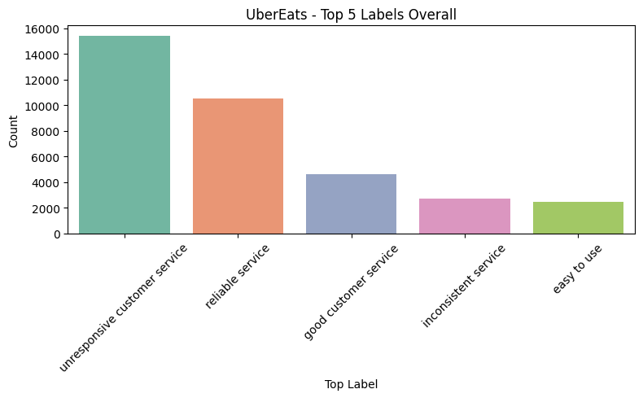
“Unresponsive customer service” is the most frequent concern, with “reliable service” following as a positive counterpoint. Mixed service perceptions dominate the narrative, showing a polarized customer experience.
DoorDash - Sentiment - Top 5 Labels
Code
import plotly.graph_objects as goimport plotly.express as px# Filter DoorDash datadoordash = combined_df[combined_df['app_name'] =='DoorDash']sentiments = ['Positive', 'Neutral', 'Negative']# Create figurefig = go.Figure()buttons = []# Add one bar trace per sentimentfor idx, sentiment inenumerate(sentiments): sentiment_df = doordash[doordash['sentiment'] == sentiment] top5 = sentiment_df['top_label'].value_counts().head(5) fig.add_trace(go.Bar( x=top5.index, y=top5.values, name=sentiment, visible=(idx ==0), # Show first sentiment by default marker_color=px.colors.qualitative.Set2 ))# Create dropdown buttonsfor i, sentiment inenumerate(sentiments): vis = [False] *len(sentiments) vis[i] =True buttons.append(dict( label=sentiment, method='update', args=[{'visible': vis}, {'title': f'DoorDash - {sentiment} Sentiment - Top 5 Labels'}] ))# Final layoutfig.update_layout( updatemenus=[dict( buttons=buttons, direction='down', showactive=True, x=0.5, xanchor='center', y=1.2, yanchor='top' )], title='DoorDash - Positive Sentiment - Top 5 Labels', xaxis_title='Top Label', yaxis_title='Count')fig.show()
DoorDash - Data Sources - Top 5 Labels
DoorDash - Google Play - Top 5 Labels (All Sentiments)
DoorDash - Overall Top 5 Labels
C:\Users\chira\AppData\Local\Temp\ipykernel_11780\1556962487.py:4: FutureWarning:
Passing `palette` without assigning `hue` is deprecated and will be removed in v0.14.0. Assign the `x` variable to `hue` and set `legend=False` for the same effect.
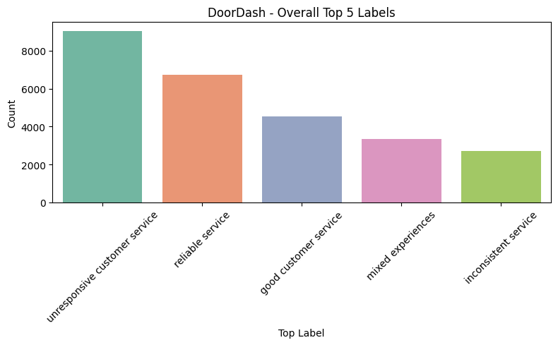
Similar to UberEats, DoorDash users frequently report “unresponsive customer service” and value “reliable service.” A notable portion of feedback also reflects inconsistency and mixed experiences.
GrubHub - Sentiment - Top 5 Labels
GrubHub - Data Sources - Sentiment - Top 5 Labels
GrubHub - Data_Source - Top 5 Labels (All Sentiments)
GrubHub - Overall Top 5 Labels
C:\Users\chira\AppData\Local\Temp\ipykernel_11780\3418218262.py:4: FutureWarning:
Passing `palette` without assigning `hue` is deprecated and will be removed in v0.14.0. Assign the `x` variable to `hue` and set `legend=False` for the same effect.
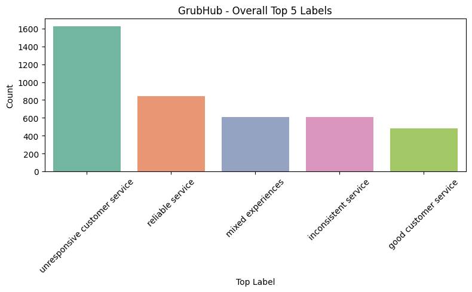
GrubHub shares similar patterns with its competitors—customer service issues top the list. “Reliable service” and “mixed experiences” suggest a divided but slightly less vocal user base.
Google Play - Sentiment - Top 5 Labels
Google Play - Overall Top 5 Labels (All Sentiments)
C:\Users\chira\AppData\Local\Temp\ipykernel_11780\3286387572.py:4: FutureWarning:
Passing `palette` without assigning `hue` is deprecated and will be removed in v0.14.0. Assign the `x` variable to `hue` and set `legend=False` for the same effect.
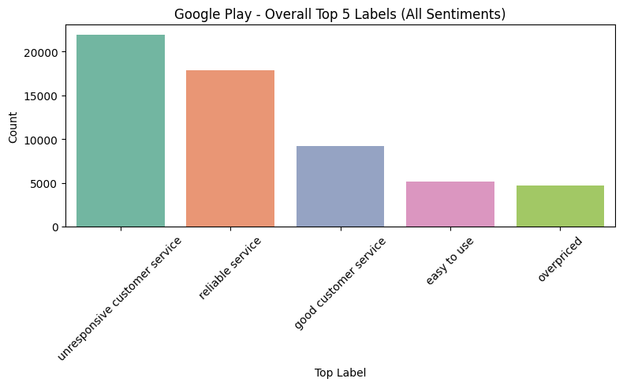
On Google Play, feedback on customer service is most dominant, both negatively (“unresponsive”) and positively (“good”). Usability (“easy to use”) and pricing also influence customer sentiment significantly.
Reddit - Sentiment - Top 5 Labels
Reddit - Overall Top 5 Labels (All Sentiments)
C:\Users\chira\AppData\Local\Temp\ipykernel_11780\1014653831.py:4: FutureWarning:
Passing `palette` without assigning `hue` is deprecated and will be removed in v0.14.0. Assign the `x` variable to `hue` and set `legend=False` for the same effect.
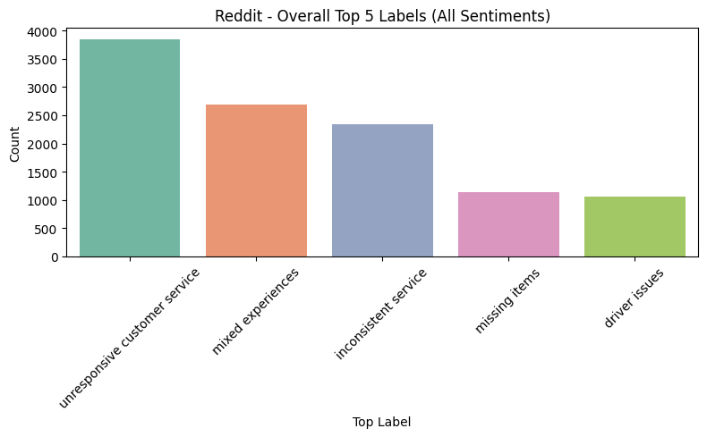
Reddit discussions heavily critique customer service, followed by comments on inconsistent and mixed experiences. Issues like missing items and driver problems highlight operational gaps.
App Store - Sentiment - Top 5 Labels
App Store - Overall Top 5 Labels (All Sentiments)
C:\Users\chira\AppData\Local\Temp\ipykernel_11780\1882811874.py:4: FutureWarning:
Passing `palette` without assigning `hue` is deprecated and will be removed in v0.14.0. Assign the `x` variable to `hue` and set `legend=False` for the same effect.
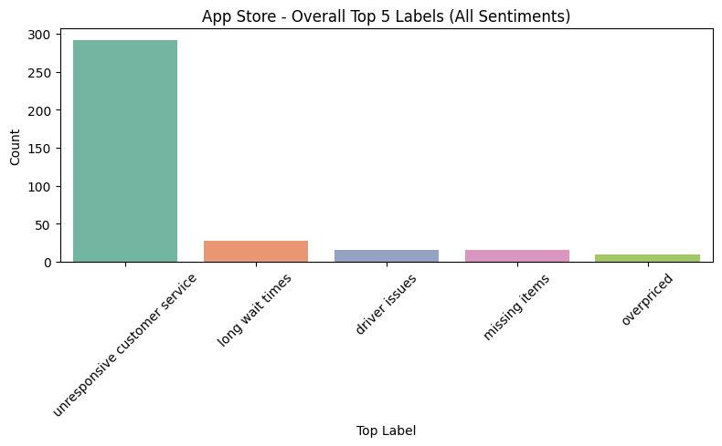
“Unresponsive customer service” overwhelmingly dominates App Store feedback. Other concerns like long wait times and delivery issues appear far less frequently, indicating focused dissatisfaction.
Top Label Frequency Over Time (All Apps & Platforms)
C:\Users\chira\AppData\Local\Temp\ipykernel_11780\3157324320.py:2: FutureWarning:
'M' is deprecated and will be removed in a future version, please use 'ME' instead.
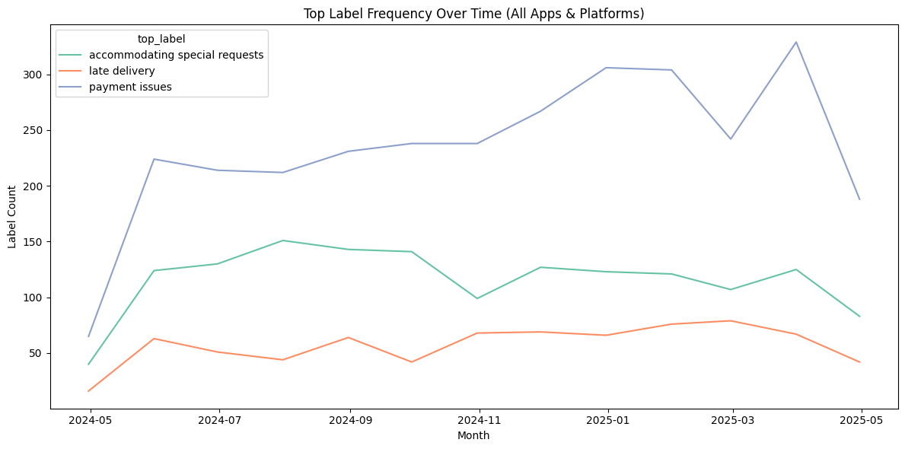
“Unresponsive customer service” overwhelmingly dominates App Store feedback. Other concerns like long wait times and delivery issues appear far less frequently, indicating focused dissatisfaction.